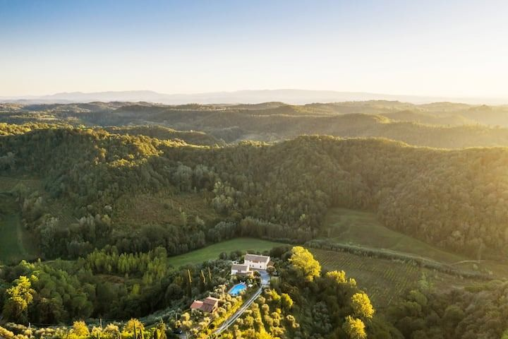

€820.000
Montopoli in Val d'Arno, Tuscany
Open the listingTwo renovated Tuscan buildings (~450 m²) keeping rustic charm, open living with fireplace, covered loggia and a true infinity pool on ~1 ha — strong design-forward character without a glass-box feel. Top condition.
Opened 3 Sep 2026. Schema €820000. 7 bed / 4 bath / 450 m² / plot 10,000. YearBuilt 1900. Condition top.